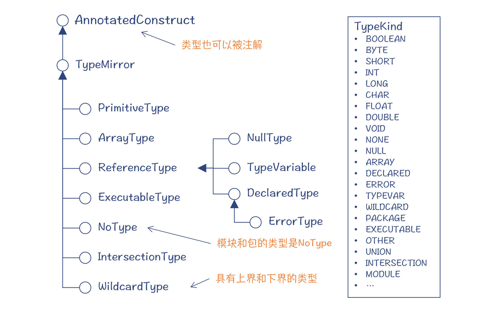
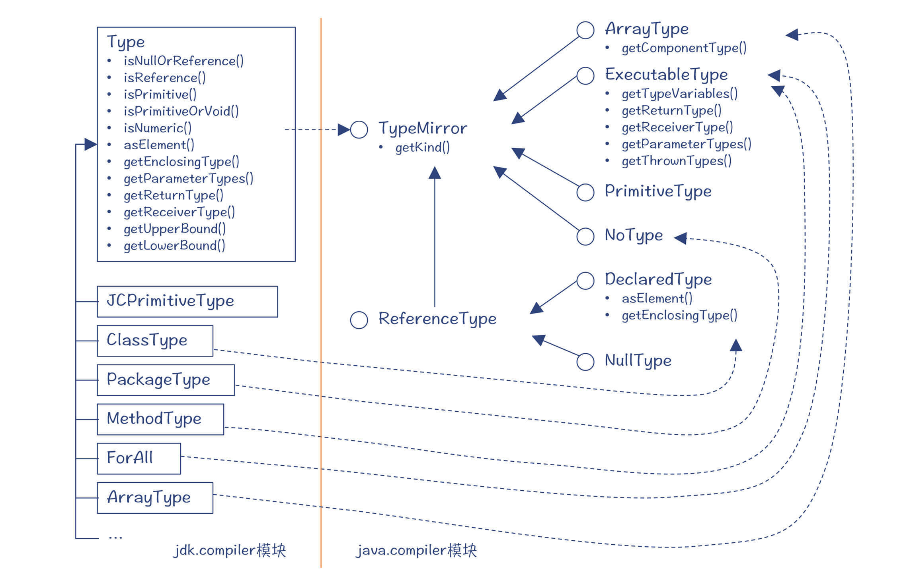
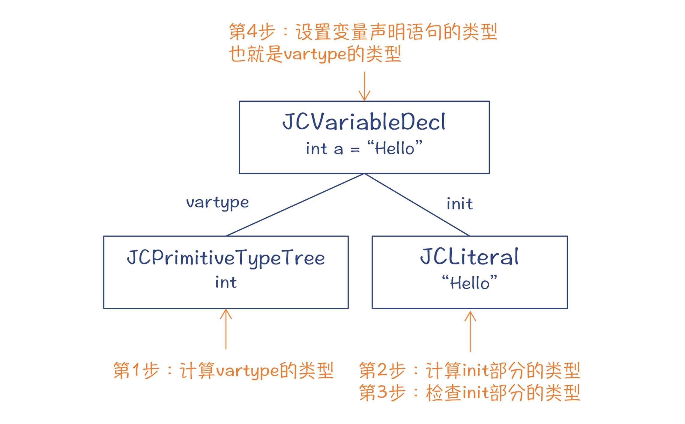
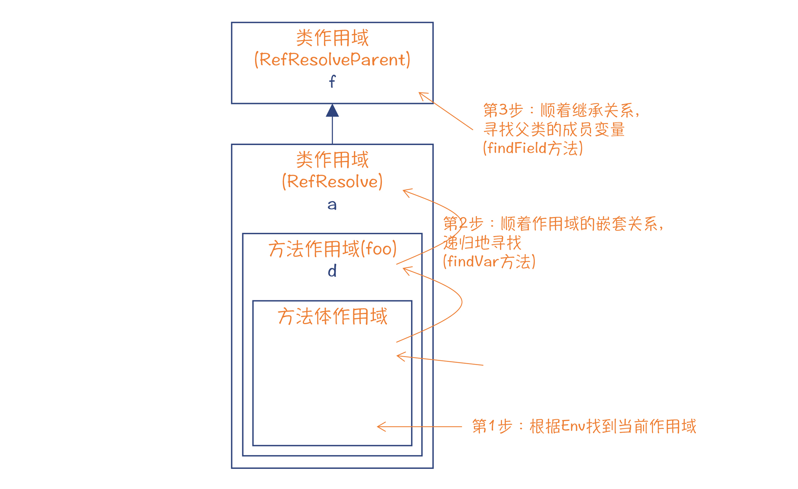
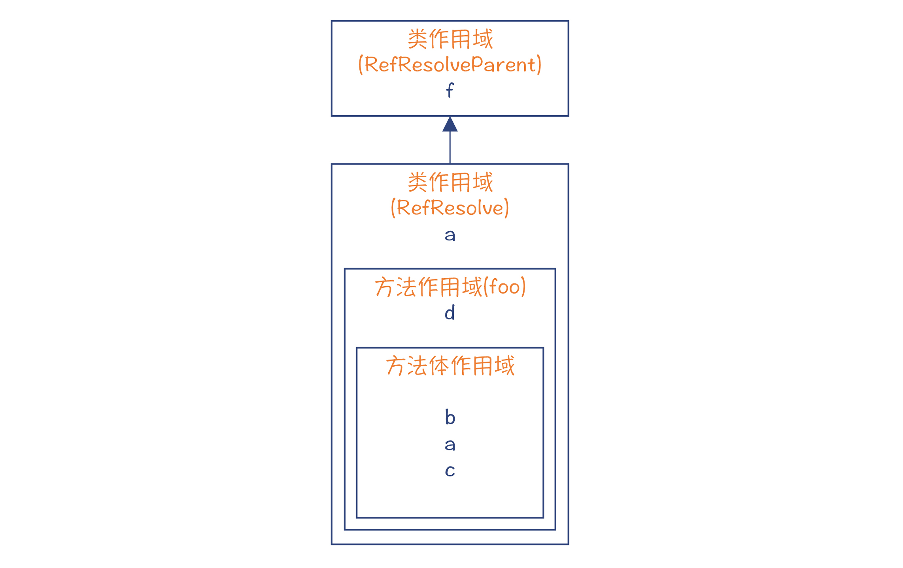
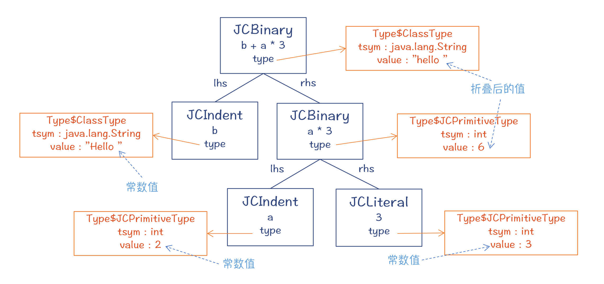
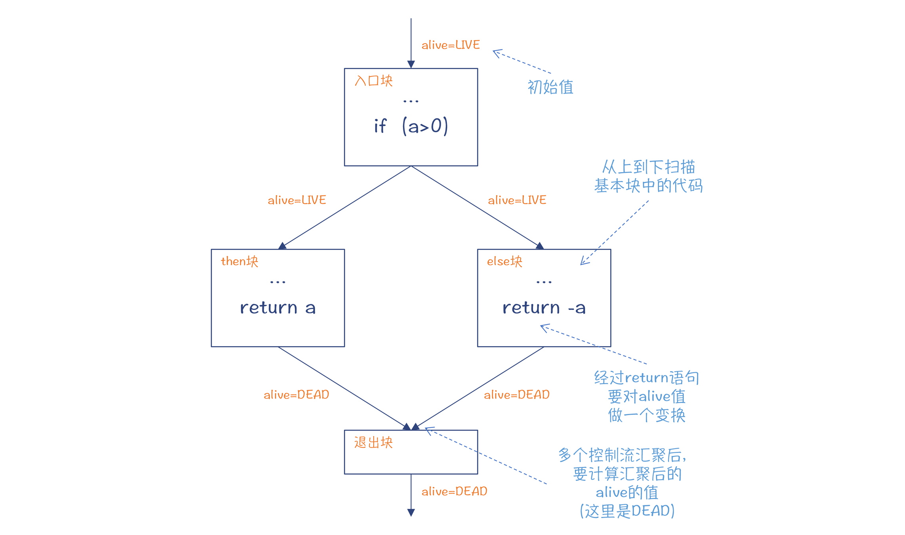
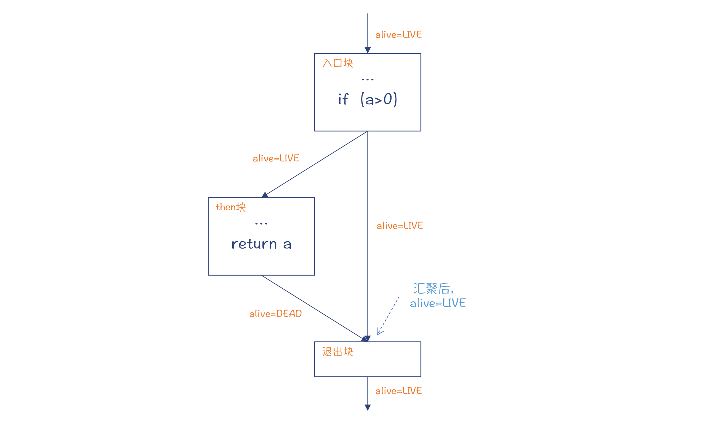
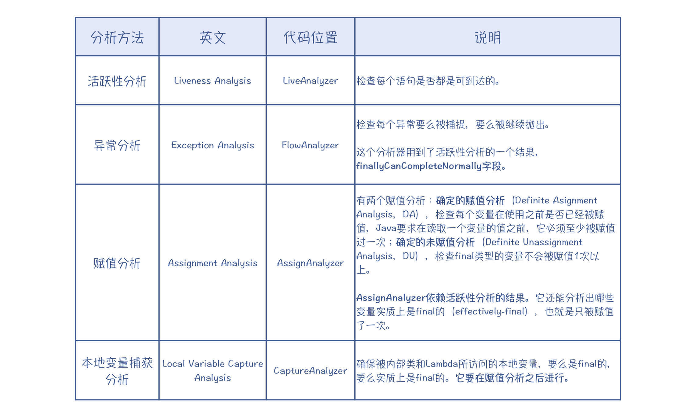
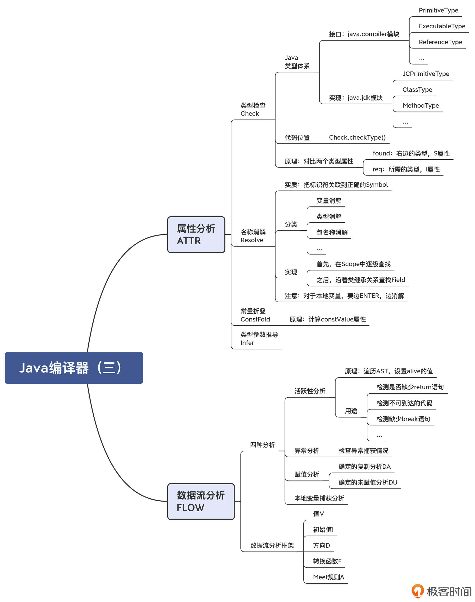

- 00 学习指南 如何学习这门编译原理实战课？.md.html
- 00 开篇词 在真实世界的编译器中游历.md.html
- 01 编译的全过程都悄悄做了哪些事情？.md.html
- 02 词法分析：用两种方式构造有限自动机.md.html
- 03 语法分析：两个基本功和两种算法思路.md.html
- 04 语义分析：让程序符合语义规则.md.html
- 05 运行时机制：程序如何运行，你有发言权.md.html
- 06 中间代码：不是只有一副面孔.md.html
- 07 代码优化：跟编译器做朋友，让你的代码飞起来.md.html
- 08 代码生成：如何实现机器相关的优化？.md.html
- 09 Java编译器（一）：手写的编译器有什么优势？.md.html
- 10 Java编译器（二）：语法分析之后，还要做些什么？.md.html
- 11 Java编译器（三）：属性分析和数据流分析.md.html
- 12 Java编译器（四）：去除语法糖和生成字节码.md.html
- 13 Java JIT编译器（一）：动手修改Graal编译器.md.html
- 14 Java JIT编译器（二）：Sea of Nodes为何如此强大？.md.html
- 15 Java JIT编译器（三）：探究内联和逃逸分析的算法原理.md.html
- 16 Java JIT编译器（四）：Graal的后端是如何工作的？.md.html
- 17 Python编译器（一）：如何用工具生成编译器？.md.html
- 18 Python编译器（二）：从AST到字节码.md.html
- 19 Python编译器（三）：运行时机制.md.html
- 20 JavaScript编译器（一）：V8的解析和编译过程.md.html
- 21 JavaScript编译器（二）：V8的解释器和优化编译器.md.html
- 22 Julia编译器（一）：如何让动态语言性能很高？.md.html
- 23 Julia编译器（二）：如何利用LLVM的优化和后端功能？.md.html
- 24 Go语言编译器：把它当作教科书吧.md.html
- 25 MySQL编译器（一）：解析一条SQL语句的执行过程.md.html
- 26 MySQL编译器（二）：编译技术如何帮你提升数据库性能？.md.html
- 27 课前导读：学习现代语言设计的正确姿势.md.html
- 28 前端总结：语言设计也有人机工程学.md.html
- 29 中端总结：不遗余力地进行代码优化.md.html
- 30 后端总结：充分发挥硬件的能力.md.html
- 31 运行时（一）：从0到语言级的虚拟化.md.html
- 32 运行时（二）：垃圾收集与语言的特性有关吗？.md.html
- 33 并发中的编译技术（一）：如何从语言层面支持线程？.md.html
- 34 并发中的编译技术（二）：如何从语言层面支持协程？.md.html
- 35 并发中的编译技术（三）：Erlang语言厉害在哪里？.md.html
- 36 高级特性（一）：揭秘元编程的实现机制.md.html
- 37 高级特性（二）：揭秘泛型编程的实现机制.md.html
- 38 综合实现（一）：如何实现面向对象编程？.md.html
- 39 综合实现（二）：如何实现函数式编程？.md.html
- 40 成果检验：方舟编译器的优势在哪里？.md.html
- 不定期加餐1 远程办公，需要你我具备什么样的素质？.md.html
- 不定期加餐2 学习技术的过程，其实是训练心理素质的过程.md.html
- 不定期加餐3 这几年，打动我的两本好书.md.html
- 不定期加餐4 从身边的牛人身上，我学到的一些优秀品质.md.html
- 不定期加餐5 借助实例，探究C++编译器的内部机制.md.html
- 划重点 7种编译器的核心概念与算法.md.html
- 期末答疑与总结 再次审视学习编译原理的作用.md.html
- 热点问题答疑 如何吃透7种真实的编译器？.md.html
- 用户故事 易昊：程序员不止有Bug和加班，还有诗和远方.md.html
- 知识地图 一起来复习编译技术核心概念与算法.md.html
- 结束语 实战是唯一标准！.md.html
- 捐赠
11 Java编译器（三）：属性分析和数据流分析
你好，我是宫文学。
在上一讲，我们主要讨论了语义分析中的ENTER和PROCESS阶段。今天我们继续往下探索，看看ATTR和FLOW两个阶段。
ATTR的字面意思是做属性计算。在第4讲中，我已经讲过了属性计算的概念，你应该还记得什么是S属性，什么是I属性。那么，Java编译器会计算哪些属性，又会如何计算呢？
FLOW的字面意思是做数据流分析。通过第7讲，你已经初步了解了数据流分析的算法。但那个时候是把数据流分析用于编译期后端的优化算法，包括删除公共子表达式、变量传播、死代码删除等。而这里说的数据流分析，属于编译器前端的工作。那么，前端的数据流分析会做什么工作呢？
这些问题的答案，我今天都会为你一一揭晓。好了，我们进入正题，首先来看看ATTR阶段的工作：属性分析。
ATTR：属性分析
现在，你可以打开com.sun.tools.javac.comp.Attr类的代码。在这个类的头注释里，你会发现原来ATTR做了四件事，分别在4个辅助类里实现：
- Check：做类型检查。
- Resolve：做名称的消解，也就是对于程序中出现的变量和方法，关联到其定义。
- ConstFold：常量折叠，比如对于“2+3”这种在编译期就可以计算出结果的表达式，就直接计算出来。
- Infer：用于泛型中的类型参数推导。
我们首先来看Check，也就是类型检查。
类型检查
类型检查是语义分析阶段的一项重要工作。静态类型系统的语言，比如Java、C、Kotlin、Swift，都可以通过类型检查，避免很多编译错误。
那么，一个基础的问题是：Java都有哪些类型？
你是不是会觉得这个问题挺幼稚？Java的类型，不就是原始数据类型，再加上类、接口这些吗？
说得对，但是并不全面。你已经看到，Java编译器中每个AST节点都有一个type属性。那么，一个模块或者一个包的类型是什么？一个方法的类型又是什么呢？
在java.compile模块中，定义了Java的语言模型，其中有一个包，是对Java的类型体系做了设计，你可以看一下：

图1：Java的类型体系
这样你就能理解了：原来模块和包的类型是NoType，而方法的类型是可执行类型（ExecutableType）。你可以看一下源代码，会发现要刻画一个可执行类型是比较复杂的，竟然需要5个要素：
- returnType：返回值类型；
- parameterTypes：参数类型的列表；
- receiverType：接收者类型，也就是这个方法是定义在哪个类型（类、接口、枚举）上的；
- thrownTypes：所抛出异常的类型列表；
- typeVariables：类型参数的列表。
如果你学过C语言，你应该记得描述一个函数的类型只需要这个列表中的前两项，也就是返回值类型和参数类型就可以了。通过这样的对比，想必你会对Java的可执行类型理解得更清楚。
然而，通过一个接口体系来刻画类型还是不够细致，Java又提供了一个TypeKind的枚举类型，把某些类型做进一步的细化，比如原始数据类型进一步细分为BOOLEAN、BYTE、SHORT等。这种设计方式可以减少接口的数量，使类型体系更简洁。你也可以在编程中借鉴这种设计方式，避免产生过多的、没有什么实际意义的子类型。
同样，在jdk.compiler模块中，有一些具体的类实现了上述类型体系的接口：

图2：类型体系的实现
好了，现在你已经了解了Java的类型体系。那么，编译器是如何实现类型检查的呢？
我用一个Java程序的例子，来给你做类型检查的说明。在下面这段代码中，变量a的声明语句是错误的，因为等号右边是一个字符串字面量“Hello”，类型是java.lang.String，跟变量声明语句的类型“int”不相符。在做类型检查的时候，编译器应该检查出这个错误来。
而后面那句“float b = 10”，虽然变量b是float型的，而等号右边是一个整型的字面量，但Java能够自动把整型字面量转化为浮点型，所以这个语句是合法的。
public class TypeCheck{
int a = "Hello"; //等号两边的类型不兼容，编译报错
float b = 10; //整型字面量可以赋值给浮点型变量
}
对于“int a = "hello"”这个语句，它的类型检查过程分了四步，如下图所示：

图3：类型检查的过程
第1步，计算vartype子节点的类型。这一步是在把a加入符号表的时候（MemberEnter）就顺便一起做了（调用的是“Attr.attribType()方法”）。计算结果是int型。
第2步，在ATTR阶段正式启动以后，深度优先地遍历整棵AST，自底向上计算每个节点的类型。自底向上是S属性的计算方式。你可以看一下Attr类中的各种attribXXX()方法，大多数都是要返回一个类型值，也就是处理完当前子树后的类型。这个时候，能够知道init部分的类型是字符串型（java.lang.String）。
第3步，检查init部分的类型是否正确。这个时候，比对的就是vartype和init这两棵子树的类型。具体实现是在Check类的checkType()方法，这个方法要用到下面这两个参数。
- final Type found：“发现”的类型，也就是“Hello”字面量的类型，这里的值是java.lang.String。这个是自底向上计算出来的，属于S属性。
- final Type req：“需要”的类型，这里的值是int。也就是说，a这个变量需要初始化部分的类型是int型的。这个变量是自顶向下传递下来的，属于I属性。
所以你能看出，所谓的类型检查，就是所需类型（I属性）和实际类型（S属性）的比对。
这个时候，你就会发现类型不匹配，从而记录下错误信息。
下面是在做类型检查时整个的调用栈：
JavaCompiler.compile()
->JavaCompiler.attribute()
->Attr.attib()
->Attr.attribClass() //计算TypeCheck的属性
->Attr.attribClassBody()
->Attr.attribStat() //int a = "Hello";
->Attr.attribTree() //遍历声明成员变量a的AST
->Attr.visitVarDef() //访问变量声明节点
->Attr.attribExpr(TCTree,Env,Type)//计算"Hello"的属性,并传入vartype的类型
->Attr.attribTree() //遍历"Hello"AST，所需类型信息在ResultInfo中
->Attr.visitLiteral() //访问字面量节点，所需类型信息在resultInfo中
->Attr.check() //把节点的类型跟原型类型(需要的类型)做比对
->Check.checkType() //检查跟预期的类型是否一致
第4步：继续自底向上计算类型属性。这个时候会把变量声明语句JCVariableDecl的类型设置为vartype的类型。
上面是对变量a的声明语句的检查过程。对于“float b = 10”的检查过程也类似，但整型是允许赋值给浮点型的，所以编译器不会报错。
说完了类型检查，我们继续看一下Resolve，也就是引用的消解。
引用消解
在第5讲中，我就介绍过了引用消解的概念。给你举个例子，当我们在程序中用到一个变量的时候，必须知道它确切的定义在哪里。比如下面代码中，第4行和第6行都用到了一个变量a，但它们指的不是同一个变量。第4行的a是类的成员变量，第6行的a是foo()函数中的本地变量。
public class RefResolve extends RefResolveParent {
int a = 2;
void foo(int d){
int b = a + f; //这里的a是RefResolve的成员变量
int a = 3; //本地变量a,覆盖了类的成员变量a
int c = a + 10; //这里的a是前一句中声明的本地变量
}
}
class RefResolveParent{
int f = 4; //父类中的成员变量
}
在编译器中，这两行中的a变量，都对应一个标识符（JCIdent）节点，也都会关联一个Symbol对象。但这两个Symbol对象不是同一个。第4行的a指的是类的成员变量，而第6行的a指的是本地变量。
所以，具体到Java编译器，引用消解实际上就是把标识符的AST节点关联到正确的Symbol的过程。
引用消解不仅仅针对变量，还针对类型、包名称等各种用到标识符的地方。如果你写了“System.out.println()”这样一个语句，就要引用正确的包符号。
你可以打开com.sun.tools.javac.comp.Resolve类的findIdentInternal方法，能看到对几种不同的符号做引用消解的入口。
...
if (kind.contains(KindSelector.VAL)) { //变量消解
sym = findVar(env, name);
...
}
if (kind.contains(KindSelector.TYP)) { //类型消解
sym = findType(env, name);
...
}
if (kind.contains(KindSelector.PCK)) //包名称消解
return lookupPackage(env, name);
...
引用消解的实现思路也很清晰。在上一讲，你知道编译器在Enter阶段已经建立了作用域的嵌套结构。那么在这里，编译器只需要沿着这个嵌套结构逐级查找就行了。
比如，对于“int b = a + f”这个变量声明语句，在查找变量a时，沿着Scope的嵌套关系往上查找两级就行。但对于变量f，还需要沿着类的继承关系，在符号表里找到父类（或接口），从中查找有没有名称为f的成员变量。

图4：引用消解的实现
不过，这里还有一个细节需要深究一下。还记得我在前一讲留了一个问题吗？这个问题是：对于方法体中的本地变量，不是在ENTER阶段创建符号，而是在ATTR阶段。具体来说，就是在ATTR的Resolve环节。这是为什么呢？为什么不在ENTER环节把所有的符号都识别出来，并且加到作用域中就行了？
我来解答一下这个问题。我们把RefResolve类中的“int a = 2;”这行注释掉，会发生什么事情呢？foo()函数的第一行“int b = a + f”应该报错，因为找不到a的定义。
public class RefResolve extends RefResolveParent{
//int a = 2; //把这行注释掉
void foo(int d){
int b = a + f; //这里找不到a，应该报错
int a = 3; //本地变量a,覆盖了类的成员变量a
int c = a + 10; //这里的a是前一句中声明的本地变量
}
}
但是，如果编译器在ENTER阶段就把所有的符号建立起来了，那么会发生什么情况呢？foo()的方法体所对应的Scope就会有一个符号a。按照前面描述的逐级查找算法，它就会认为“int b = a + f”里的这个a，就是本地变量a。这当然是错误的。
所以，为了保证消解算法不出错，必须保证在做完“int b = a + f”这句的引用消解之后，才会启动下一句“int a = 3”的ENTER过程，把符号a添加的foo()方法体的作用域中。引用消解都处理完毕以后，符号表才会填充完整，如下图所示：

图5：引用消解后，符号表中添加了本地变量
常数折叠
在ATTR阶段，还会做一项优化工作：Constant Fold，即常数折叠。
我们知道，优化工作通常是在编译器的后端去做的。但因为javac编译器只是个前端编译器，生成字节码就完成任务了。不过即使如此，也要保证字节码是比较优化的，减少解释执行的消耗。
因为常数折叠借助属性计算就可以实现，所以在ATTR阶段顺便就把这个优化做了。
Java在什么情况下会做常数折叠呢？我们来看看下面这个例子。变量a和b分别是一个整型和字符串型的常数。这样的话，“c=b+a*3”中c的值，是可以在编译期就计算出来的。这要做两次常数折叠的计算，最后生成一个“Hello 6”的字符串常数。
public class ConstFold {
public String foo(){
final int a = 2; //int类型的常数
final String b = "Hello "; //String类型的常数
String c = b + a * 3; //发生两次折叠
return c;
}
}
触发上述常数折叠的代码，在com.sun.tools.javac.comp.Attr类的visitBinary()方法中，具体实现是在com.sun.tools.javac.comp.ConstFold类。它的计算逻辑是：针对每个AST节点的type，可以通过Type.constValue()方法，看看它是否有常数值。如果二元表达式的两个子节点都有常数值，那么就可以做常数折叠，计算出的结果保存在父节点的type属性中。你可以看看下图。

图6：AST节点对应的常数值属性
扩展：你看了这个图，可能会有一个疑问：常数值为什么不是保存在AST节点中，而是保存在类型对象中？类型带上一个值是什么意思？常数值为2的整型和常数值为3的整型是不是一个类型？- 这是因为Type里保存的信息本来就比较杂。我们前面分析过，一个可执行类型（比如方法）里包含返回值、参数类型等各种信息。一个类型的元数据信息（通常指标注），也是存在Type里面的。所以，一个方法的类型信息，跟另一个方法的类型信息，是迥然不同的。在这里，不要把Type叫做“类型”，而是叫“类型信息”比较好。每个类型信息对象只针对某个AST节点，包含了该节点与类型有关的各种信息。因此，在这里面再多放一个常数值，也就无所谓了。
你能看出，常数折叠实质上是针对AST节点的常数值属性来做属性计算的。
推导类型参数
ATTR阶段做的最后一项工作，也是跟类型相关，那就是对泛型中的类型参数做推导。
这是什么意思呢？在Java语言中，如果你前面声明了一个参数化类型的变量，那么在后面的初始化部分，你不带这个参数化类型也是可以的，编译器会自动推断出来。
比如下面这句：
List<String> lines = new ArrayList<String>();
你可以去掉初始化部分中的类型参数，只保留一对尖括号就行了：
List<String> lines = new ArrayList<>();
甚至更复杂的参数化类型，我们也可以这样简化：
Map<String, List<String>> myMap = new HashMap<String, List<String>>();
//简化为：
Map<String, List<String>> myMap = new HashMap<>();
你可以在Infer.instantiateMethod()方法中打个断点，观察一下泛型的推断。关于泛型这个主题，我会在“揭秘泛型编程的实现机制”这一讲，去展开讲一些关于类型计算的算法，这里就不详细展开了。
好了，到这里，你已经知道了属性分析所做的四项工作，它们分别针对了四个属性：
- 类型检查针对的是类型属性；
- 引用消解是针对标识符节点的符号（sym）属性，也就是要找到正确的符号定义；
- 常数折叠针对的是常数值属性；
- 类型参数的推导，针对的是类型参数属性。
所以，现在你就可以解答出学教科书时通常会遇到的一个疑问：属性计算到底是计算了哪些属性。我们用实战知识印证了理论 。
接下来我们看看编译器下一个阶段的工作：数据流分析。
FLOW：数据流分析
Java编译器在FLOW阶段做了四种数据流分析：活跃性分析、异常分析、赋值分析和本地变量捕获分析。我以其中的活跃性分析方法为例，来给你做讲解，这样其他的几个分析方法，你就可以举一反三了。
首先，我们来看看活跃性分析方法对return语句的检测。
举个最简单的例子。下面这段代码里，foo函数的返回值是int，而函数体中，只有在if条件中存在一个return语句。这样，代码在IDE中就会报编译错误，提示缺少return语句。
public class NoReturn{
public int foo(int a){ //在a<=0的情况下，不会执行return语句
if (a> 0){
return a;
}
/*
else{
return -a;
}
*/
}
}
想要检查是否缺少return语句，我们就要进行活跃性分析。活跃性分析的具体实现是在Flow的一个内部类LiveAnalyzer中。
在分析过程中，编译器用了一个alive变量来代表代码是否会执行到当前位置。打开Flow$LiveAnalyzer类，你会看到visitMethodDef中的部分代码，如下所示。如果方法体里有正确的return语句，那么扫描完方法体以后，alive的取值是“DEAD”，也就是这之后不会再有可执行的代码了；否则就是“ALIVE”，这意味着AST中并不是所有的分支，都会以return结束。
public void visitMethodDef(JCMethodDecl tree) {
...
alive = Liveness.ALIVE; //设置为ALIVE
scanStat(tree.body); //扫描所有的语句
//如果仍然是ALIVE，但返回值不是void，那么说明缺少Return语句
if (alive == Liveness.ALIVE && !tree.sym.type.getReturnType().hasTag(VOID))
log.error(TreeInfo.diagEndPos(tree.body), Errors.MissingRetStmt);
...
}
你可以看到下面的代码示例中，当递归下降地扫描到if语句的时候，只有同时存在then的部分和else的部分，并且两个分支的活跃性检查的结果都是“DEAD”，也就是两个分支都以return语句结束的时候，if节点执行后alive就会变成“DEAD”，也就是后边的语句不会再被执行。除此之外，都是“ALIVE”，也就是if后边的语句有可能被执行。
public void visitIf(JCIf tree) {
scan(tree.cond); //扫描if语句的条件部分
//扫描then部分。如果这里面有return语句，alive会变成DEAD
scanStat(tree.thenpart);
if (tree.elsepart != null) {
Liveness aliveAfterThen = alive;
alive = Liveness.ALIVE;
scanStat(tree.elsepart);
//只有then和else部分都有return语句，alive才会变成DEAD
alive = alive.or(aliveAfterThen);
} else { //如果没有else部分，那么把alive重新置为ALIVE
alive = Liveness.ALIVE;
}
}
看代码还是比较抽象。我把数据流分析的逻辑用控制流图的方式表示出来，你看着会更直观。

图7：活跃性分析
我们通过活跃性分析，可以学习到数据流分析框架的5个要素：
- V：代表被分析的值，这里是alive，代表了控制流是否会到达这里。
- I：是V的初始值，这里的初始值是LIVE；
- D：指分析方向。这个例子里，是从上到下扫描基本块中的代码；而有些分析是从下往上的。
- F：指转换函数，也就是遇到每个语句的时候，V如何变化。这里是在遇到return语句的时候，把alive变为DEAD。
- Λ：meet运算，也就是当控制流相交的时候，从多个值中计算出一个值。你看看下图，在没有else块的时候，两条控制流中alive的值是不同的，最后的取值是LIVE。

图8：当没有else块的时候，两条控制流中的alive值不同
在做meet运算的时候，会用到一个叫做半格的数学工具。你可以参考本讲末尾的链接。
好了，我借助活跃性分析给你简要地讲解了数据流分析框架，我们接着往下看。
再进一步，活跃性分析还可以检测不可到达的语句。
如果我们在return语句后面再加一些代码，那么这个时候，alive已经变成“DEAD”，编译器就会报“语句不可达”的错误。
Java编译器还能检测更复杂的语句不可达的情况。比如在下面的例子中，a和b是两个final类型的本地变量，final修饰词意味着这两个变量的值已经不会再改变。
public class Unreachable{
public void foo(){
final int a=1;
final int b=2;
while(a>b){ //a>b的值可以在编译期计算出来
System.out.println("Inside while block");
}
System.out.println("Outside while block");
}
}
这种情况下，在扫描 while语句的时候，条件表达式“a>b”会被计算出来，是false，这意味着while块内部的代码不会被执行。注意，在第7讲的优化算法中，这种优化叫做稀疏有条件的常数折叠。因为这里是用于编译器前端，所以只是报了编译错误。如果是在中后端做这种优化，就会直接把不可达的代码删除。
//Flow$AliveAnalyzer
public void visitWhileLoop(JCWhileLoop tree) {
ListBuffer<PendingExit> prevPendingExits = pendingExits;
pendingExits = new ListBuffer<>();
scan(tree.cond); //扫描条件
alive = Liveness.from(!tree.cond.type.isFalse()); //如果条件值为false,那么alive为DEAD
scanStat(tree.body); //扫描while循环体
alive = alive.or(resolveContinues(tree));
alive = resolveBreaks(tree, prevPendingExits).or(
!tree.cond.type.isTrue());
}
void scanStat(JCTree tree) { //扫描语句
//如果在扫描语句的时候，alive是DEAD，那么该语句就不可到达了
if (alive == Liveness.DEAD && tree != null) {
log.error(tree.pos(), Errors.UnreachableStmt);
if (!tree.hasTag(SKIP)) alive = Liveness.RECOVERY;
}
scan(tree);
}
还有一种代码不可达的情况，就是无限循环后面的代码。你可以思考一下，在上面的例子中，如果把while条件的“a>b”改成“a”，会发生什么情况呢？
编译器会扫描while里面有没有合适的break语句（通过resolveBreaks()方法）。如果找不到，就意味着这个循环永远不会结束，那么循环体后面的语句就永远不会到达，从而导致编译器报错。
除了活跃性分析，Flow阶段还做了其他三项分析：异常分析、赋值分析和本地变量捕获分析。
为了方便你的学习，我把Java编译器用到的几个数据流分析方法整理了一下，放在下面的表格中：

这几种分析方法，我建议你可以做几个例子，跟踪代码并研究一下，会加深你对数据流分析的直观理解。
异常分析、赋值分析和本地变量捕获的思路，与活跃性分析类似，它们都是按照数据流分析框架来处理的。也就是说，对于每个分析方法，你都要注意识别出它的五大要素：值、初始值、转换规则、扫描方向，以及meet运算规则。
课程小结
今天这一讲，我们研究了Java编译过程中的属性分析和数据流分析两个阶段。
在属性分析阶段，你能够看到Java是如何做类型检查、引用消解、常量折叠和推导类型参数的，它们实际上是对类型（type）、符号（sym）、常量值（constValue）和类型参数这4类属性的处理工作。
我们也见识到了在编译器前端的数据流分析阶段，是如何使用数据流分析方法的。通过数据流分析，编译器能够做一些更加深入的语义检查，比如检查控制流是否都经过了return语句，以及是否有不可到达的代码、每个异常是否都被处理，变量在使用前是否肯定被赋值，等等。
总体来说，在ATTR和FLOW这两个阶段，编译器完成了主要的语义检查工作。如果你在设计一门语言的时候，遇到了如何做语义检查的问题，那你就可以参考一下这一讲的内容。
在最后，是本节课程知识点的思维导图，供你参考：

一课一思
数据流分析框架很重要，你可以借助实例对它熟悉起来。那么，你能针对赋值分析，把它的5个元素列出来吗？欢迎在留言区分享你的思考，我会在下一讲的留言区，通过置顶的方式公布标准答案。
如果你觉得有收获，欢迎你把今天的内容分享给你的朋友。
参考资料
© 2019 - 2023 Liangliang Lee. Powered by gin and hexo-theme-book.